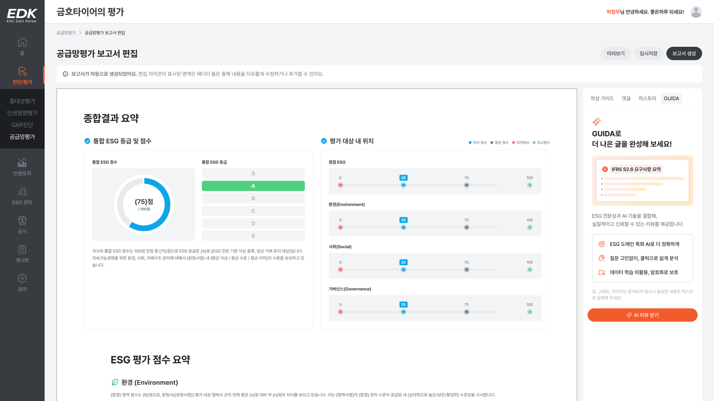
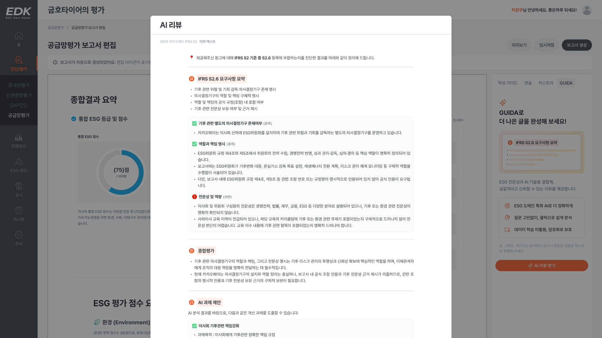

데이터와 실행
ESG 인벤토리를 관리 가능한 목표와 달성 현황으로 연결해야 해요.

데이터에서 목표·보고서로 이어지는 구조
ESG 인벤토리를 관리 가능한 목표와 달성 현황으로 연결해야 해요.
보고서 작성과 항목별 검토 결과를 같은 흐름으로 이해해야 해요.
목록에서 원하는 목표를 찾고, 단계별 현황과 검토할 항목을 구분하는 일이 필요했어요.
데이터를 더 보여주기보다 목표의 단계, 필터, 보고서 검토 항목으로 읽는 기준을 나눴어요.
기존 설계 기록에 담긴 관점이에요. 별도의 사용자 조사 결과는 아직 확인되지 않았어요.
인벤토리의 정량 지표를 모아요.
단기·중간·최종 목표와 실적을 비교해요.
항목별 내용을 작성해요.
확인할 내용의 우선순위를 읽어요.
기존 설계 설명에서 정보의 관계와 이동 순서를 요약했어요.


반복되는 화면과 예외 상태를 같은 기준으로 다루기 위한 규칙이에요.
기능의 관계, 이동 경로, 화면의 이름과 문장 기준을 함께 정했어요.
목표 관리의 오류 대응과 사용자 행동에 따른 상태 변화를 설계 기준에 포함했어요.
컴포넌트와 Figma 주석에 기능·상태·예외 흐름을 연결했어요.

GUIDA는 사용자의 보고서를 검토하는 제품 기능이에요. 디자인 과정에서 사용한 도구·작업 내역은 확인 후 추가할 예정이에요.
프로젝트에 남아 있는 설계·협업 자료예요.


앞에서 읽은 구조와 설계 기준을 실제 프로젝트 화면에 연결해 보세요.




데이터를 목표와 보고서라는 업무 단위로 재구성해요.
검토 결과를 항목과 우선순위로 나눠요.
명칭·상태·컴포넌트 기준을 협업 문서까지 연결해요.
데이터를 모으는 구조와 그 데이터를 활용하는 업무 흐름을 함께 설계해야 해요.
목표 탐색과 보고서 검토 흐름의 실제 사용 결과를 확인할 자료를 추가할 예정이에요.
성과 수치·사용자 반응·검증 방법과 기간은 자료 확인 후 추가해요. 이 페이지는 기존 프로젝트 기록을 바탕으로 구성했으며, 확인되지 않은 조사·성과를 추정하지 않았어요.